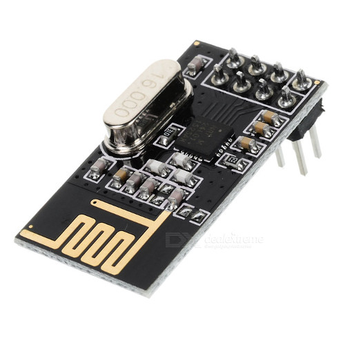
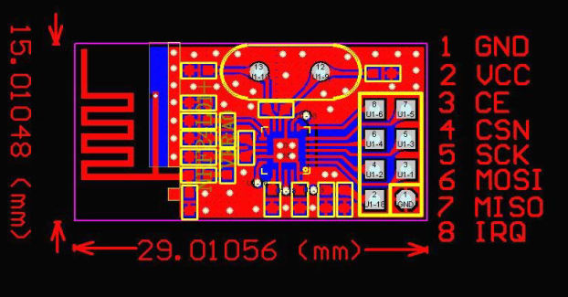

Archived note, written in 2016, while I was at MIT FabLab Kerala. Tools and versions have moved on since.
NRF24L01
An ultra low cost RF module
The nRF24L01 is a highly integrated, ultra low power (ULP) 2Mbps RF transceiver IC for the 2.4GHz ISM (Industrial, Scientific and Medical) band. With peak RX/TX currents lower than 14mA, a sub μA power down mode, advanced power management, and a 1.9 to 3.6V supply range, the nRF24L01 provides a true ULP solution enabling months to years of battery lifetime when running on coin cells or AA/AAA batteries .

The devices supports SPI and the pinout is as follows.

Image Source : http://www.electrodragon.com/w/images/e/e9/NRF24L01B.png
It is worth noting that the pins of NRF24L01 , provided with IoT lab are 5V tolerant but ensure that only 3.3v is made available to Vcc
Interfacing with Arduino
The sketch given below simply turns on a LED on the receiver when a button on the transmitter is pressed. The transmitter transmits the code "111." The receiver receives the code "111" and turns on the LED.
Ensure the RF24 library is installed , else download it (as zip) from here . You can install the library in Arduino IDE using Sketch-> Import library-> Add library. Another way is to extract the zip file to your Arduino home directory: Arduino/libraries on Linux
Connection
- Pin 9 - CE
- Pin 10 - CS(N)
- Pin 11 - MOSI
- Pin 12 - MISO
- Pin 13 - SCK On the Receiver:
- Pin 3 - LED On the Transmitter:
- Pin 7 - Button
Arduino Code - Transmitter/Receiver
You may clone the NRF24L01 repo using
git clone https://github.com/akshaim/NRF24l01
Example Project for sending and receiving data on NRF24L01 using maniacbug library
https://appnote.tenettech.com/wp-content/uploads/2017/01/nrf24l01-transceiveranalogread.pdf